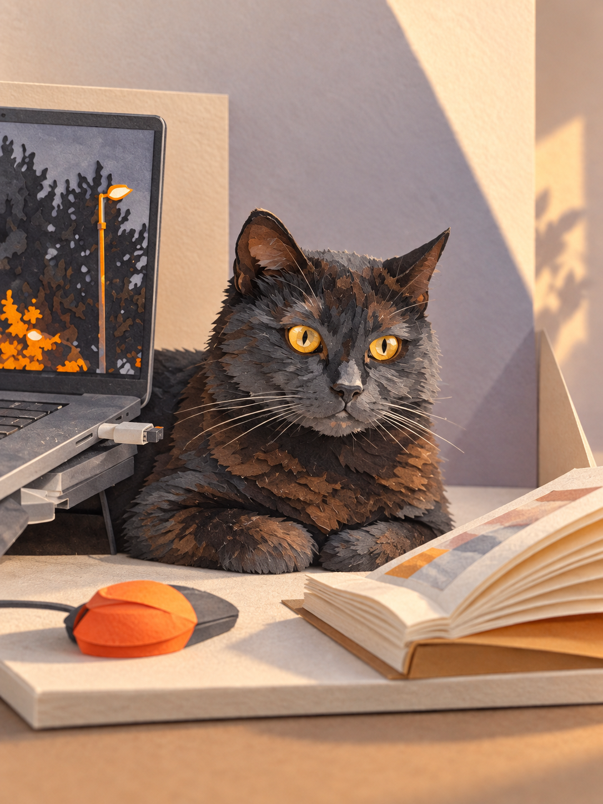
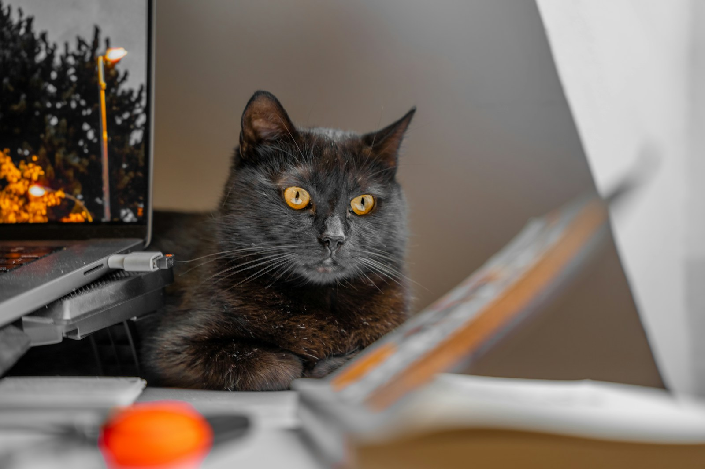
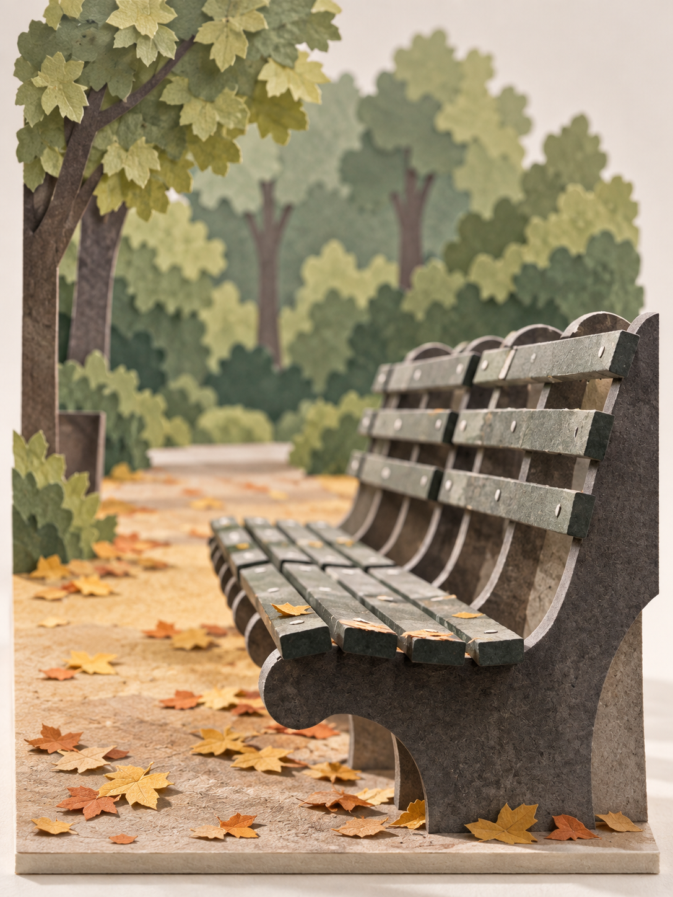
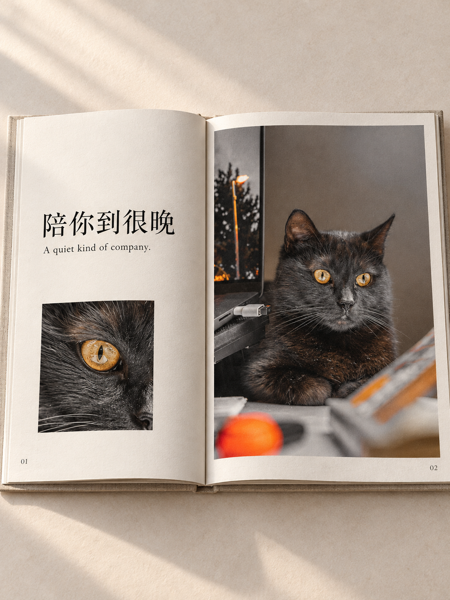
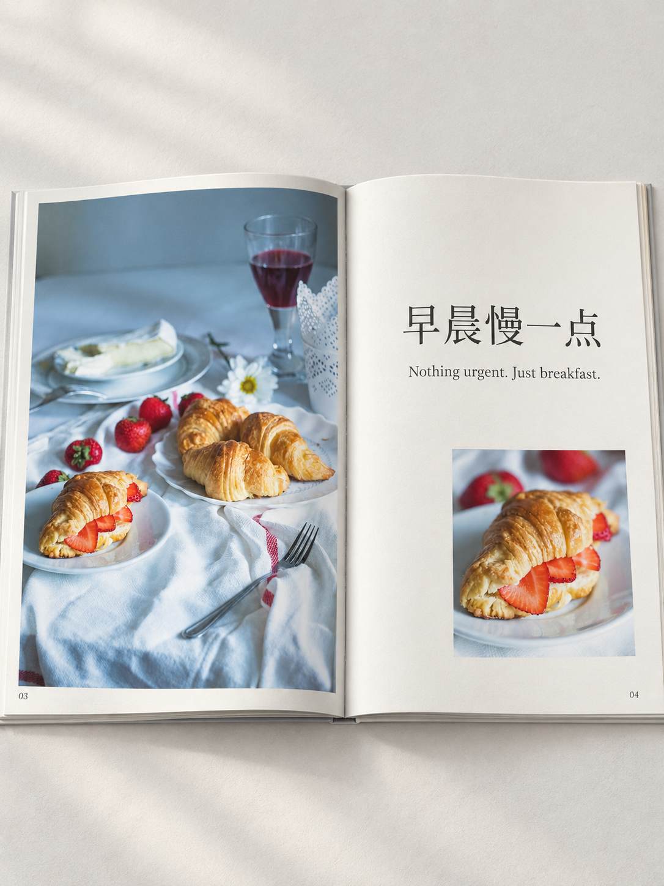
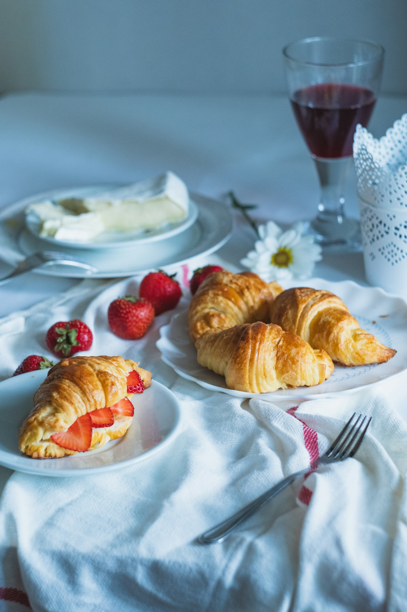
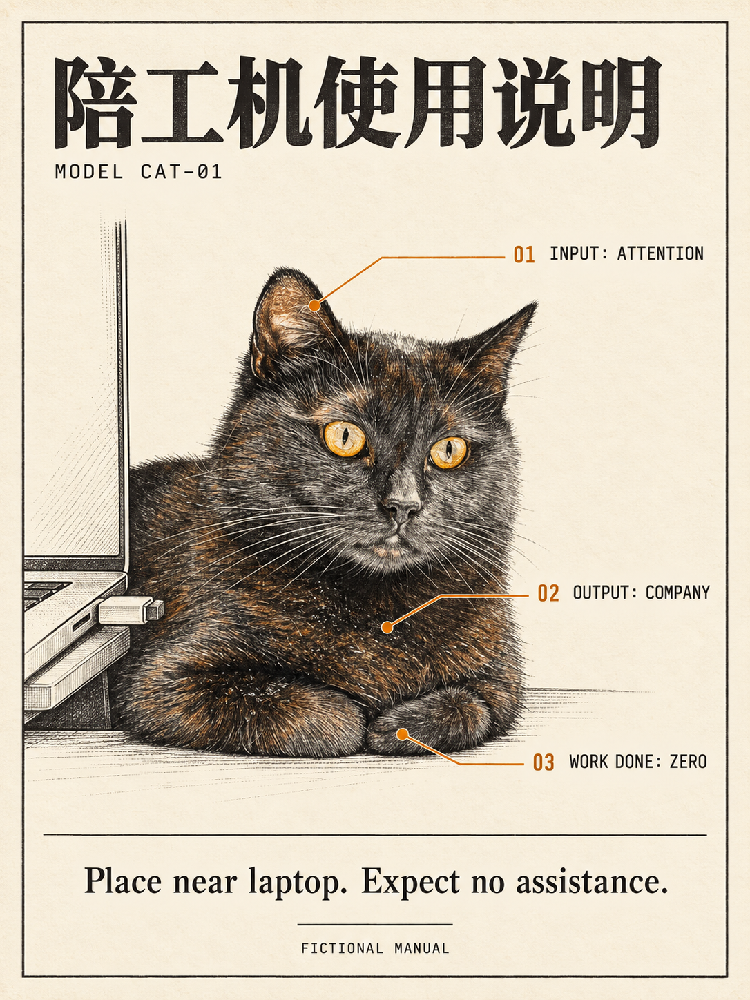
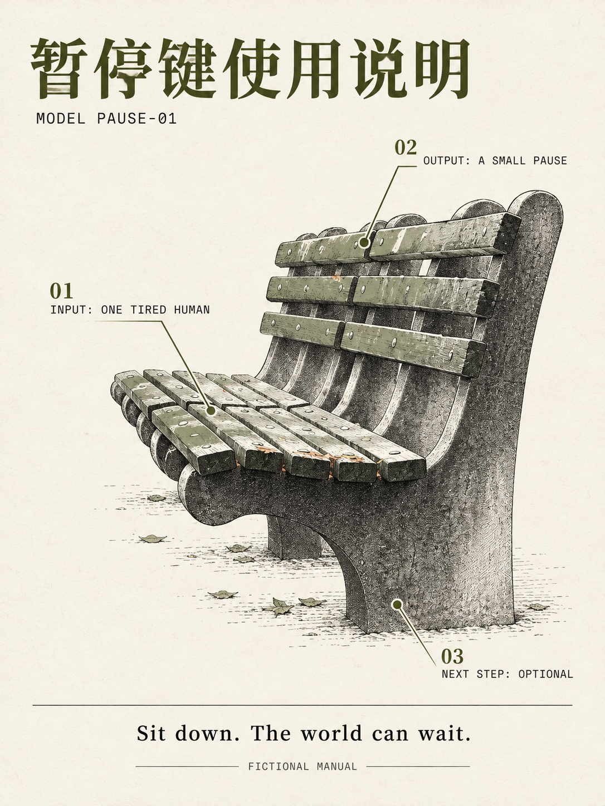

三款新 Skill，六张成品。点击成品查看大图，展开原照片作对照。你可以直接按作品名称反馈想保留或修改的地方。
本批收录于 v0.4.0。原有五款 Skill 保持原样。

琥珀眼、伏卧姿态和电脑/书本的位置清楚；猫的纸片较细密，更像精细纸模型。


长椅弯曲骨架和前后景清楚；树叶被具体化，属于创意重构。

中英文及页码准确，主图与眼睛细节形成节奏；这是书册效果图，不是可翻页文件。

四个牛角包及餐桌关系保留，中英文及页码准确；模型有重绘，不保证原照片像素不变。


标题、三个英文标注和底部文案准确；标注对应耳朵、胸口和前爪。

标题和英文文案准确，编号对应座面、靠背和椅腿；小字需要点开原尺寸查看。